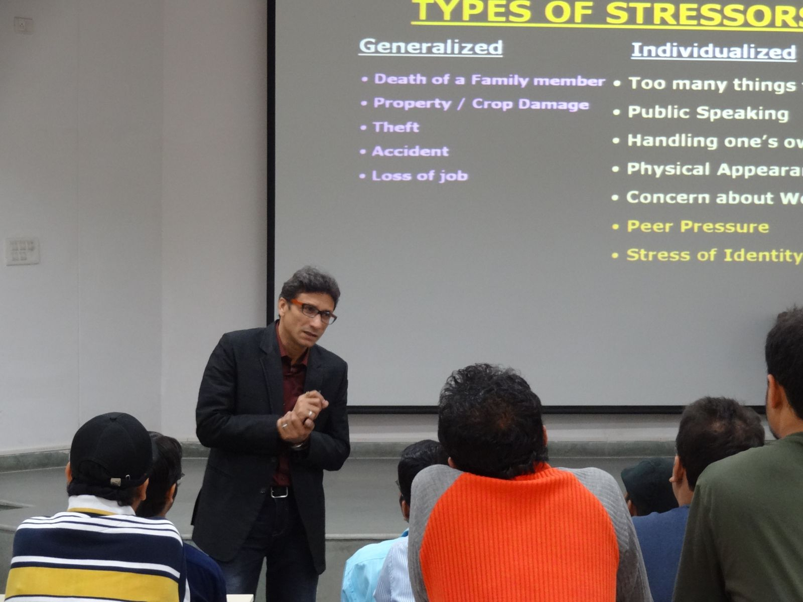

<div id="single-portfolio">
	<div id="portfolio-details" class="container">
		<a class="close-folio-item" href="#"><i class="fa fa-times"></i></a>
		
		<div class="row">
			<div class="col-sm-9">
				<div class="project-info">
					<h3>MEDICAL ISSUES WITH ADOLESCENCE</h3>
					<p>A lecture and interactive session was organized by Counseling Cell, IIT Roorkee on Medical Issues with Adolescence at Saharanpur Campus of IIT Roorkee on Sunday, September the 23rd. The Cell had invited Dr Shalabh Jain (Psychiatrist with 20 years experience) and Dr (Mrs) Ritu Jain (Gynaecology and infertility issues with 15 years experience) from Saharanpur for the event. Student Counsellor of the Cell, Dr Shikha Jain was also present at the session. The event started at around 1130 hrs and continued for more than two hours to around 1400 hrs.</p>
                    <p>The session hit with a cozy start with Dr Shalabh Jain giving them general guidelines, speaking out about the quality of life and how to stay happy, with plentiful Bollywood jokes and dialogues thrown in-between now and then. That later gave way to an engaging interactive session. Students asked questions on many diverse topics like substance abuse, social problems, depression, stress, romantic troubles etc. Many students were interested in behavioural problems like lack of concentration, excess or non-existent religiosity, misunderstanding with fellow students, family, ego, obsession, recklessness etc. Some questions were typically sociological kind, characterising somewhat rebellious instinct to others with sheer interest in other sex. Almost everybody wanted to know how one can combat stress, depression, inferiority complex etc. The participation in combined session was overwhelming, only repeated insistence could get the ladies to go to another room for the following girls only session. The following boys-only session focussed primarily on boys medical health and sex related issues. The speaker was very willing and effective in answering all the questions, and everybody was satisfied.</p>
                    <p>In all, the response was tremendous. We had an audience of about 120 students and although there was only a handful of female audience, but the curiosity was unfathomably high. The session was expected to last only for an hour whereas it went for more than two. The atmosphere was completely devoid of hesitations and was relieving and soothing .The session was successful in imparting valuable knowledge about things that are not discussed in public life and about which students usually have very dangerous misconceptions. Many students expressed desire to be more actively involved in the Counselling Cell activities in future.</p>
				</div>
			</div>
			<div class="col-sm-3">
				<div class="project-details">
					<h3>Event Details</h3>
					<p><span>Date:</span> 2014</p>
				</div>
			</div>
		</div>
	</div>
</div>
